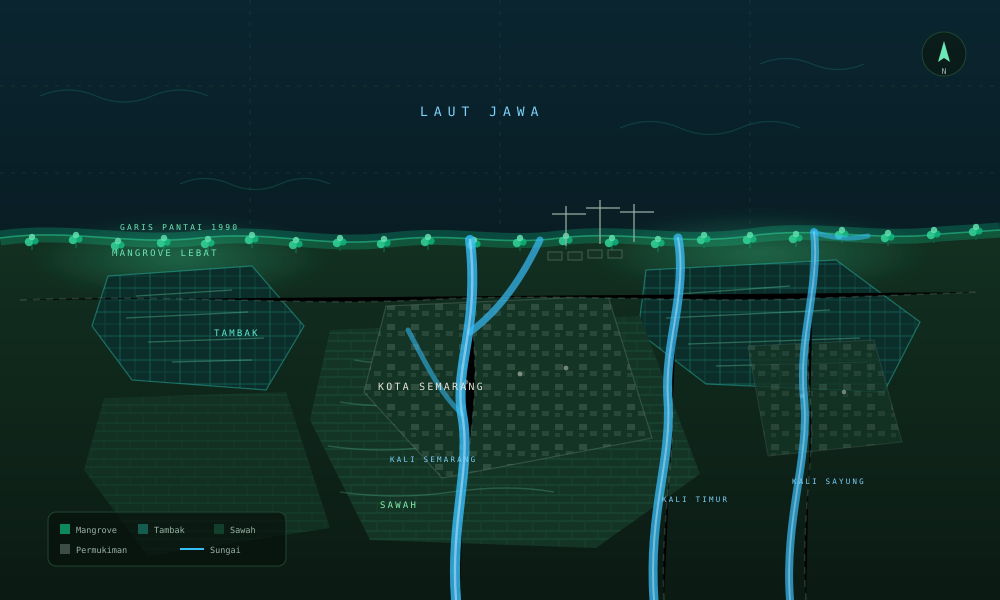
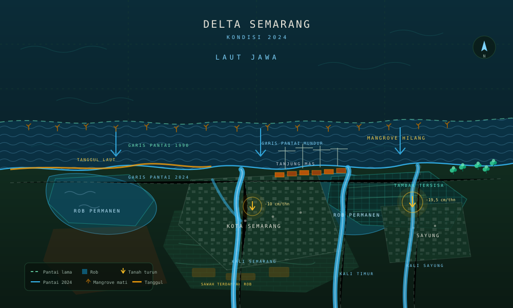

Galeri Kasus Ekologis
Eksplorasi Luka Nusantara
Saring berdasarkan kategori bencana, bandingkan kondisi kawasan dulu dan kini, lalu buka modul edukasi pada setiap kasus.
Data Pendukung
Angka di Balik Setiap Kasus
Sebelum masuk ke galeri, lihat besaran persoalannya. Empat grafik berikut memakai data resmi dan setiap kartu mencantumkan tautan sumbernya.
Sumber data
Tiap grafik juga memuat sumber spesifik di bagian bawah kartu. Angka dibulatkan untuk keterbacaan; nilai lengkap mengikuti laporan resmi.
Komparasi Waktu
Dulu vs Sekarang
Geser ikon api untuk melihat wilayah terdampak: titik karhutla, banjir parah, kekeringan, longsor, dan tambang.


Dulu SekarangTitik api: Riau · Jambi · Sumsel · Kalbar · Kalteng · Kalsel Banjir parah: Jawa & Sulawesi Tambang: Kalimantan Timur · Sulawesi · Papua Kekeringan: Nusa Tenggara Timur Longsor: Jawa Barat
Dampak di sekitar wilayah terdampak
Asap lintas batas
Kabut asap dari titik api Sumatra menyeberang ke Malaysia dan Singapura.
Kesehatan warga
ISPA, iritasi mata, dan gangguan pernapasan naik di permukiman sekitar titik api.
Habitat & satwa
Hutan gambut dan rumah satwa di Sumatra–Kalimantan hilang; satwa terdorong ke permukiman.
Gambut sulit pulih
Lahan gambut kering butuh puluhan tahun untuk pulih dan mudah terbakar lagi.
Banjir & rob
Permukiman pesisir Jawa dan Sulawesi terendam; warga mengungsi.
Tambang & lahan rusak
Lubang tambang di Kalimantan Timur & Papua; air tercemar, bentang alam rusak.
Nikel di Sulawesi
Tambang nikel membuka hutan lereng, meninggalkan tailing, dan mengeruhkan sungai warga.
Kekeringan NTT
Kemarau panjang membuat sumur dan embung kering; warga bergantung pada truk tangki air.
Longsor Jawa Barat
Hujan ekstrem di lereng yang gundul memicu longsor, menutup jalan dan merusak rumah.
“Di antara hamparan yang dulu hijau, tersisa jejak bara yang mengingatkan kita: alam tak pernah benar-benar pulih sendirian.”
Studi Kasus — Delta Semarang
Ketika Laut Mengambil Alih Delta
Di pesisir Semarang–Demak, delta sungai yang dulu subur kini menghadapi dua tekanan sekaligus: tanahnya turun karena pengambilan air tanah, sementara muka laut terus naik. Garis pantai pun bergerak ke darat, dan rob masuk lebih jauh ke permukiman serta tambak. Geser pembanding berikut untuk melihat perkiraan perubahan delta dari kondisi 1990-an menuju 2024.


Dulu · 1990-an Sekarang · 2024Ilustrasi interpretatif berbasis citra satelit historis & literatur ilmiah — bukan tangkapan layar Google Earth. Pembaca dapat memverifikasi perubahan garis pantai pada citra historis di Google Earth / Earth Pro.
19,5 cm/thn
Penurunan muka tanah terparah di Sayung berdasarkan InSAR Sentinel-1 (2015–2022).
1.266,52 ha
Perkiraan luas genangan rob di Kecamatan Sayung pada skenario pasang dan penurunan tanah.
141,49 ha
Abrasi pesisir Sayung 2013–2020, jauh lebih luas daripada akresi 36,61 ha.
10–12 cm/thn
Laju penurunan muka tanah Kota Semarang; rob makin sering masuk ke permukiman.
Sumber & cara verifikasi
- Khairullah, K. K., Rifai, A., & Indrayanti, E. (2024). Studi Luasan Genangan Banjir Rob Akibat Kenaikan Muka Air Laut dan Penurunan Muka Tanah di Kecamatan Sayung, Demak. UNDIP. tautan
- Ramadhani et al. (2021). Perubahan Garis Pantai Pesisir Sayung. Journal of Marine Research UNDIP. tautan
- InSAR Sentinel-1 (2015–2022) untuk laju penurunan muka tanah; artikel terkait.
- Badan Informasi Geospasial (BIG) untuk data garis pantai dan DEM: big.go.id.